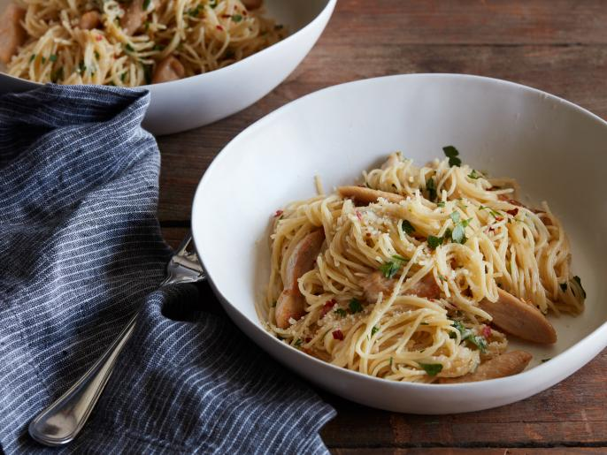

Chicken Scampi

Description:
Chicken takes the place of shrimp in this dish inspired by the Olive
Garden classic -- making it even more weeknight friendly. Serve over angel
hair pasta and you'll be in and out if the kitchen in less than 30
minutes. Molto bene!
Ingredients
-
1 pound of thinly-sliced chicken cutlets, cut into 1/2-inch-thick strips
- Kosher salt
- 3 tablespoons olive oil
- 8 tablespoons unsalted butter, cubed
- 6 cloves garlic, sliced
- 1/2 teaspoon crushed red pepper flakes
- 1/2 cup dry white wine
- 12 ounces angel hair pasta
- 1 teaspoon lemon zest plus the juice of 1 large lemon
- 1/2 cup freshly grated Parmesan
- 1/2 cup chopped fresh Italian parsely